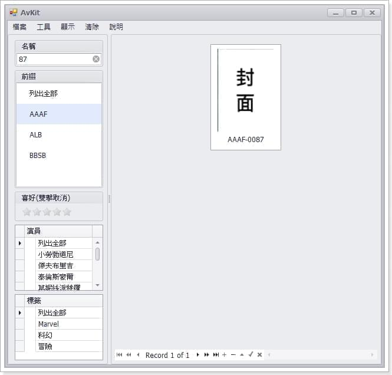
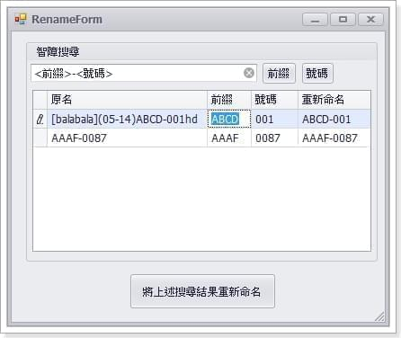
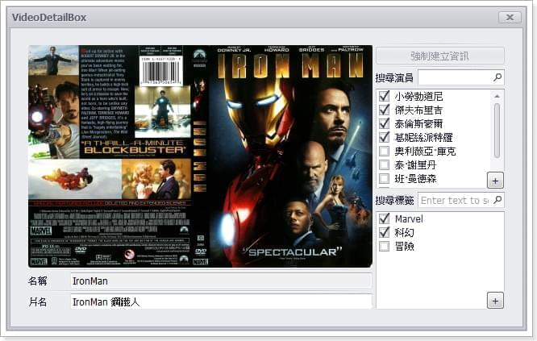

由於最近工作不順，人生仿佛陷入了低潮之中，那該如何快速擺脫低潮期就變成了一個至關重要的問題，而身為一個程式設計師，就應該利用自己的優勢「程式設計」來解決問題，於是我就開發了這支低潮管理器。
建檔
低潮是沒有底線的，隨著時間的增長低潮也會越來越大，這個時候我們也會愈發的難以管理它，所以我寫了一個路徑遞迴搜尋低潮功能，來做到低潮一鍵建檔，降低低潮的維護難度，理所當然地，第二次選擇相同路徑時，也會過濾掉已重複建檔的檔案，並挑出尚未建檔的資料進行匯入。
可視化
能夠清清楚楚地看到低潮與其相關資訊無疑可以幫助我們管理它，這裡依照自己的需求設計了三個分別為卡片、列表、混合型的檢視模式，若是有長方形的封面還會幫你切出右半部方便預覽。
搜尋引擎
好的搜尋工具可以避免自己陷入重複的低潮中。理論上，低潮的檔名都有一個所謂的前綴，例如「ABCD-001」、「ZZ-987」，在匯入時挑出這些類別，並幫相關檔案進行分類，這麼做的好處除了可以方便做搜尋引擎，也能使自己更瞭解自己的低潮喜好與分佈狀況。

重新命名
低潮發生時，偶爾會出現檔案名稱雜訊過多的問題，例如「[balabala](05-14)ABCD-001hd」之類的，發生這種問題時會不利於我們之後要做的線上取得低潮資訊功能，所以我寫了一個小工具來幫助使用者挑出其關鍵字ABCD-001，並將檔案重新命名。

路徑重構
在我的電腦會發生一種情況，當低潮的同個資料夾下有過多的多媒體檔案時，開啟此資料夾的速度會變得極慢，所以我也加入了自動檢測該檔案是否有建立同檔名資料夾的功能，並自動建立其上層資料夾，透過這個方式來解決問題。
資訊同步
其實這才是我做這支程式的主要目的。因為一定要打開檔案才能百分之百的知道低潮的內容物是什麼這件問題深深的困擾著我，除了有時候會沒有封面外，封面與內容不符也是個重大的問題。所以取得該低潮資訊，如封面、品名、廠商、參與者、標籤…等，無疑可以幫助使用者提高自己低潮的掌握度。
資訊修改
低潮是如此的博大精深，當然也無法做到盡善盡美，當無法從線上取得資訊時，就靠自己來建立吧。

右鍵選單
找到自己想要的低潮後就可以嘗試解決問題啦。
結語
真的很想放出這支程式來幫助人，但我在開發時使用了Devexpress的多個套件，而這套工具是所在公司購買的授權，發佈怕是會有違法嫌疑，或許等我有一天自己買了授權就可以公開啦。